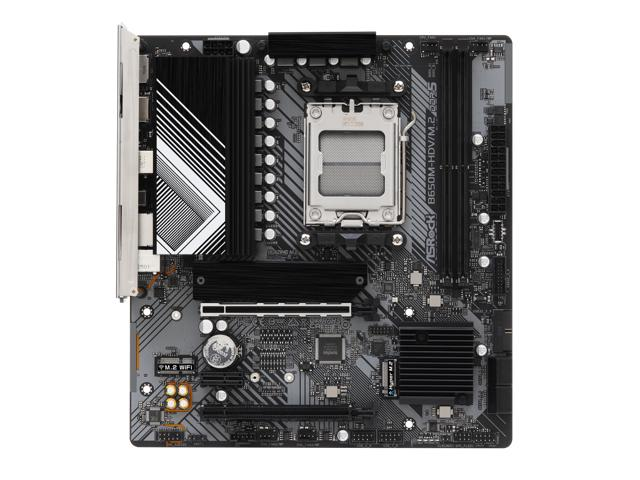
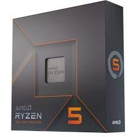
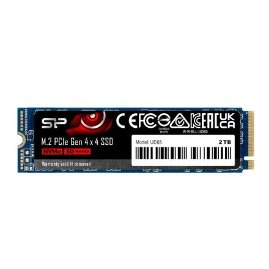

Motherboard utilizada: ASRock B650M-HDV/M.2 Micro ATX AM5 Motherboard
Para instalar uma CPU, alinhe a marca de orientação da CPU com o soquete da placa-mãe. Feche a alavanca para travá-la.
Processador utilizado: AMD Ryzen 5 7600X 4.7 GHz 6-Core Processor
Insira os módulos nos slots indicados. Memórias RAM utilizadas: ADATA XPG Lancer Blade RGB 32 GB (2 x 16 GB) DDR5-6000 CL30 Memory

Desmonte a proteção, encaixe o SSD e recoloque a proteção.
SSD utilizado: Silicon Power UD85 2 TB M.2-2280 PCIe 4.0 X4 NVME Solid State Drive
Posicione a placa gráfica virada para baixo ao colocar a placa-mãe na torre para melhor refrigeração.
Placa gráfica utilizada: XFX Speedster MERC 310 Black Edition Radeon RX 7900 XT 20 GB Video Card

Fonte de alimentação utilizada: Cooler Master MWE Gold 850 - V2 850 W 80+ Gold Certified Fully Modular ATX Power Supply


Obs: Ao encaixar a placa-mãe já montada, retire a chapa da caixa e coloque a fornecida com a placa gráfica.